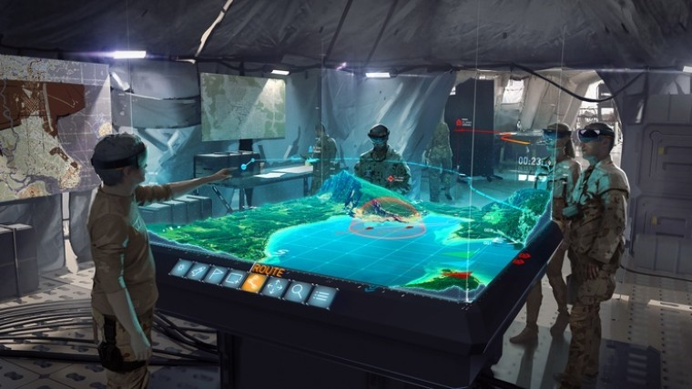
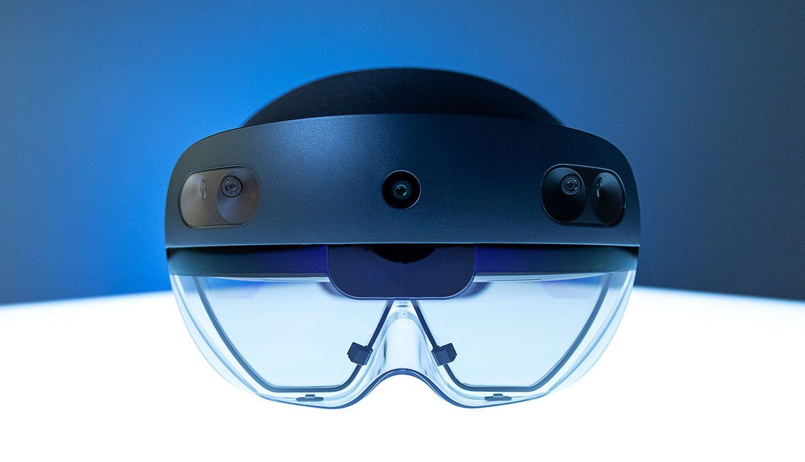

Background Info
The United States Air Force (USAF) follows a detailed process with every flight, where pilots and crew members conduct thorough pre-flight checks, execute their mission objectives, and then return to assess their performance. After each flight, a flight debriefing is held to review the mission, analyze the success and areas for improvement, and ensure that lessons are learned for future operations. During the debrief, flight data is reviewed, often using detailed video footage, flight path analysis, and performance metrics, to foster discussion and continuous improvement.
These debriefings are crucial for maintaining operational readiness and ensuring the highest standards of safety and efficiency in every mission. Unfortuntaely, the technology used in these processes are becoming outdated and inefficient compared to the tools of today.
The USAF hosts an annual competition, SparkTank, where bases nationwide pitch innovative solutions for implementation. Partnering with Luke Air Force Base, I developed a modern solution to revolutionize the outdated flight debriefing process.

Project Overview
The challenge: Flight debriefing is essential after every mission, yet traditional tools lack the 3D visualization needed for such a dynamic experience.
Our solution: Create a mixed reality application to visualize flight paths using real F-16 and geographical data, while retaining familiar legacy debrief annotations.
Timeline
January 2021 - May 2021
How It Works
In 2021, the Microsoft HoloLens 2 stood out as the leading mixed reality headset, offering advanced features like immersive holographic displays, hand tracking, and spatial mapping. We selected this device for its capability to render 3D models in a shared space across multiple headsets, enabled by Azure Spatial Anchors—a cloud-based technology that allows precise alignment and persistent placement of holograms in real-world environments.
Geographical Data
Each F-16 is equipped with an onboard sensor that tracks its location and orientation during flight, capturing data such as longitude, latitude, roll, pitch, and yaw. After landing, the sensor's hard drive is removed, and the data is securely transferred to a computer for analysis. Interestingly, a unique challenge arose early on: due to the sensitivity of the data, sharing an example required it to be burned onto a CD for secure transfer.
To accurately visualize the recorded flight paths, we integrated the Bing Maps API within Unity. This allowed us to map the flight data to precise geographic locations on Earth, providing an immersive and realistic context for the paths. By combining the API’s geospatial capabilities with Unity’s 3D visualization tools, we were able to create a dynamic representation of flight paths grounded in real-world geography.
Design Process
Introducing a mixed reality solution to the USAF's flight debriefing process required carefully crafting a compelling narrative. The Air Force has relied on established methods for decades, and with the high stakes of their operations, there’s little tolerance for error or unnecessary disruption. I needed to clearly demonstrate how this new technology could seamlessly integrate into their workflow, enhance their ability to analyze missions, and add tangible value without compromising efficiency or accuracy. By emphasizing the benefits of improved 3D visualization and real-time collaboration, I showed how mixed reality could elevate their debriefing process while respecting the precision and reliability they depend on.
Storyboard
I designed an intuitive interface that effectively utilized 3D space, allowing airmen to maintain full control over flight discussions while preserving the ability to see each other's faces and hand gestures. This balance ensured seamless collaboration and natural communication, enhancing the debriefing process without compromising interaction or clarity.
User Interface
Final Concept
We concluded with a live demo day where six airmen from Luke Air Force Base tested the multiplayer experience. They experimented with both same-room and remote scenarios, showcasing how the system could simulate debriefings from different locations—a significant potential benefit. With the demo complete, we had everything we needed for our pitch.
Results
We were honored to be chosen as finalists to pitch our idea at the Spark Tank event, though we ultimately didn’t take home the win. Looking back, I believe that with today’s advancements in mixed reality technology, our concept would make an even greater impact. At the time, there were significant risks in implementing such a system, but one thing is certain—it left a lasting impression.
This project taught me so much: from how to manipulate data for animations and developing with the HoloLens 2, to learning how to pitch a disruptive idea to a niche audience. As mixed reality technology evolves, I’m excited to one day contribute to another groundbreaking project in this space.